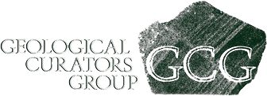

We are very happy to be able to invite everybody to the 66th Symposium on Vertebrate Palaeontology and Comparative Anatomy at the Universities of Manchester and Salford, September 5th-7th 2018.
Registration and abstract submission are now closed. The final full schedule has been emailed to delegates.
Special Symposium: "Advances in the Vertebrate Tree of Life"
The first day of the meeting with feature a special symposium on “Advances in the Vertebrate Tree of Life” with invited speakers from the UK and abroad giving extended talks (30 minutes) that highlight the cutting edge advances that fossils have made in understanding vertebrate phylogeny. Scheduled speakers include:
Robert Asher (Cambridge) Michael Coates (Chicago) Katie Davis (York)
Sam Giles (Oxford)
Emma Randle (Bath) Oliver Rauhut (Munich).
SPPC
The Symposium on Palaeontological Preparation, a forum for discussion of fossil preparation, conservation and related topics, will be held on the first morning of the meeting (5th). Platform presentations will be welcome, but attendees are also welcome to bring specimens of interest that they wish to present or discuss in an interactive forum.
SPPC is in association with the Geological Curators Group.

Workshop: Introduction to Bayesian phylogenetic analysis for palaeontologists
Led by Robin Beck (Salford), with assistance from Graeme Lloyd (Leeds), this workshop will provide an introduction to the principles underlying Bayesian phylogenetic analysis of palaeontological (morphological) data, and how such analyses can be implemented using the widely-used program MrBayes. Topics covered will include the Lewis model for morphology and its variants, model fit/comparison with Bayes factors, MCMC and how to determine stationarity and convergence between chains, and tip-dating for inferring divergence times. Participants should bring their own laptops, and should have downloaded MrBayes 3.2.6 (available here: https://github.com/NBISweden/MrBayes/tree/v3.2.6. They will also need a simple text editor for editing input files (e.g. Notepad in Windows, TextEdit in macOS). Example datasets will be provided, but participants are encouraged to bring their own: ideally, these should be in NEXUS format, with an estimated age (either a point estimate or age range) for each taxon, and for the age of the root node.
A small supplement of £10 per attendee is requested to support the workshop.
Jones-Fenleigh Memorial Fund
The Jones-Fenleigh is a fund administered by each year's SVPCA host committee to help pay for delegates with no institutional financial support to attend the SVPCA meeting and present research. Awards from the fund are competitive and are claimed retrospectively from the Palaeontological Association on the production of receipts. The award pays a maximum of £250 and can be used to pay for travel to the meeting, the conference fee, accommodation, and subsistence, but not optional extras (field trip, conference dinner). Criteria for selecting awardees and details of how to apply are provided on the SVPCA website (http://svpca.org/jonesfenleigh.php). Application deadline was June 20th (midnight).
Poster Session
Posters will be presented during the dedicated poster session (16.30 -18.00 of Thursday 6th), during which we ask presenters to be in attendance. This will take place in G12 of the Williamson building, just across the road from the Samuel Alexander Building. For logistical reasons posters will be on display for this day only, so we ask delegates to please attend the dedicated poster session. Snacks, wine, beer, and other refreshments will be provided.
Annual Auction
The annual auction will immediately follow the poster session, starting at 18.00 in the Williamson Building (G03 lecture theatre). Proceeds of the auction will go the Jones-Fenleigh Fund, to support future SVPCA and SPPC attendance by those without institutional funding. Please do think of things you have to donate, be they specimen replicas, books, monographs, artwork, clothing, toys – anything will be gratefully received! Unfortunately the lecture theatre will not be able to accommodate all delegates. Places have been allocated on a first-come first-served basis to delegates who email SVPCAMAN2018@listserv.manchester.ac.uk.
SVPCA and SPPC will take place at the University of Manchester Oxford Road Campus. Oral sessions will take place at the Samuel Alexander Lecture Theatre in the Samuel Alexander Building (M13 9PP, map below). Registration and tea breaks will take place in the foyer of the same building. The workshop, poster session, and annual auction will take place in the Williamson Building (map below) whilst the welcome reception (18.00 Wednesday 5th) will take place in the Manchester Museum fossil gallery (map below).
Step free access to the Samuel Alexander Lecture Theatre is to the rear (purple arrow in the map). The main campus is a short walk (1 mile) or bus ride (#147) from Manchester Piccadilly railway station, which has frequent trains to Manchester Airport. The welcome reception is being held at the fossil galleries of Manchester Museum and the annual dinner is being held at Yang Sing in Manchester’s historic China town (34 Princess Street, M1 4JY).
Oxford road has plenty of eating and drinking establishments available. Lunch is not provided to delegates, but we recommend Kro bar (Oxford Road) for those wanting a sit down lunch, or just south on Oxford Road is a Sainsbury’s local, Costa Coffee, and a Subway. Each evening has social events, but for after we recommend either Kro bar again, Big Hands (Oxford Road) or Sandbar (Grosvenor Road). You will likely find the local hosting committee at one of these after hours! For evening meals, Manchester’s famous “Curry Mile” is a short walk (0.6 miles) south of the University Campus and has no shortage of options.
The annual dinner will take place at the award winning Yang Sing in Manchester’s historic China town. It can be found at 34 Princess Street (M1 4JY). This is a short walk (1 mile) from the conference venue. Simply head north on the A34 (Upper Brook St), which becomes Princess Street. Please arrive at 18.30 for dinner at 19.00. The event has proved quite popular and is now at full capacity – thank you to those who already registered for this event.
The ‘field’ trip (Saturday September 8th) this year will begin with a morning visit to the recently refurbished Buxton Museum and Art Gallery. Here we will have an opportunity to view the new galleries, including the ‘Wonders of the Peak’, and will also be given a guided tour of the palaeontology stores, housing the important archive and collections of the Victorian ‘Cave Hunters’ Sir William Boyd Dawkins and Dr J. Wilfred Jackson. Lunch will be taken at a local pub after which we will walk the short distance to Poole’s Cavern, where will have a guided tour underground into the spectacular caves and caverns. This natural cave in Carboniferous Limestone, was occupied from the late Neolithic Period, and was opened as a showcave in 1853. Return to Manchester for 5.00pm.
The cost of the field trip (£30) will cover coach travel to and from Manchester, as well as admission to the Museum and Cavern. Field trip attendees will need to cover their own lunch costs. Numbers are limited to a maximum of 35 participants.
Robert Sansom (Chair, UoM), Robin Beck (UoS), Charlotte Brassey (MMU), Robert Brocklehurst (UoM), Leah Callender-Crowe (UoM), Joe Keating (UoM), John Nudds (UoM), Elsepth Wallace (UoM), Dean Lomax (UoM).
University of Manchester (UoM), University of Salford, and Manchester Metropolitan Museum (MMU).